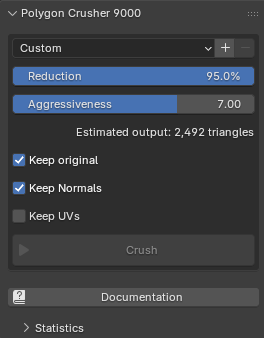

Quick Start
The Crusher Panel
Once the addon is installed, open the N-panel → Crusher tab in the 3D Viewport. The panel exposes the reduction settings, a live triangle estimate, the Crush button, and a collapsible Statistics sub-panel that fills in after each run.

Basic Workflow
- Select one or more mesh objects in the 3D Viewport
- Open the Crusher panel (press N → Crusher tab)
- Set your desired Reduction percentage
- Click Crush
The addon will:
- Evaluate each selected object's full modifier stack and crush the resulting mesh
- Transfer the original surface normals onto the decimated mesh (when Keep Normals is on)
- Place the result in a Crushed collection at the scene root
- Hide the original (or delete it, depending on Keep original)
- Preserve smooth shading if any face on the source was smooth
The decimated copy lands at the source's exact world transform.
Choosing a Reduction Amount
| Reduction | Use Case |
|---|---|
| 20–40% | Light clean-up; barely noticeable up close |
| 50–70% | Background props, secondary assets (default 50%) |
| 80–95% | Distant objects, LODs, real-time assets |
The panel shows a live Estimated output triangle count below the sliders so you can see exactly how your reduction setting maps to the final mesh before crushing.
Tips
For 3D Scans and Photogrammetry
Keep Aggressiveness low (around 1.0–2.0) to preserve fine features like eyes, hair, and creases. Leave Keep Normals on so the smooth shading of the original scan survives — even at very high reduction levels.
For Lower-Detail or Hard-Surface Meshes
Bump Aggressiveness up to 5.0–7.0. The simplifier converges faster and hits the target reduction more reliably on meshes with less surface detail.
Working with Modifiers
Crusher reads the evaluated mesh — i.e. whatever the viewport actually shows, including booleans, subdivision, remesh, and any other modifier on the stack. The original object and its modifier stack are left untouched. The crushed result is a fresh static mesh with no modifiers.
Processing Multiple Objects
Select all the objects you want to crush before clicking Crush. They run in parallel — one subprocess per CPU core — so on an 8-core host, crushing 8 meshes takes about as long as crushing one.
Press ESC at any time to abort the run.
Performance on Apple Silicon
The native simplifier ships hand-tuned for Apple Silicon (arm64). On M-series Macs, the algorithm takes full advantage of the unified memory architecture and arm64 SIMD — multi-million-triangle meshes typically crush in seconds.
After Crushing
Open the collapsible Statistics sub-panel under the Crusher panel to see per-phase timings and triangle counts for the currently selected crushed object.